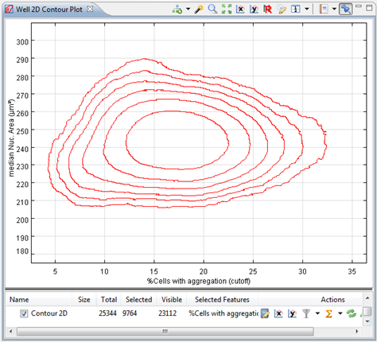

The 2D Contour Plot shows contour lines on places where the density is greater. It illustrates the height or in this case the number of points on or near eachother.
The 2D Contour Plot is used to show the density of well points. We recommend to smooth the lines more than the default amount, so that the single points get filtered out and a better overview is achieved.

| Scatter 2D Layer | This will add a Scatter Layer to the plot. This can be used to imitate the 2D Scatter Plot. If you want to use scatter and density, use of a "Scatter-Density Plot" is advised. |
| Density 2D Layer | This will add a density layer to the plot. |
| Contour 2D Layer | This will show gravity lines around areas according to the density. We recommend that you smoothen the lines with the layer settings for a better result. |
| Well Image Layer | This shows the well image (if available) of the selected points |
| Compound Layer | This shows an graphical representation (if available) of the compounds of the selected points. |